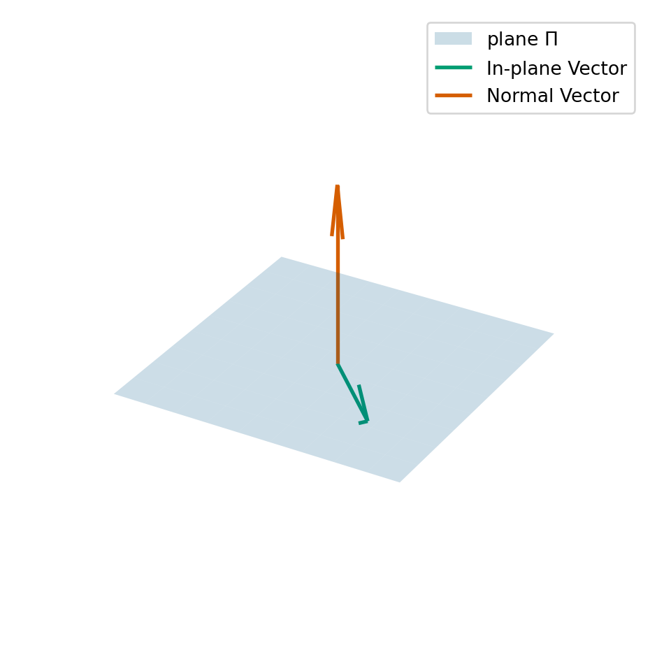

7 Eigenvectors and eigenvalues
This section of the notes will introduce our second big linear algebra problem. Throughout, we will be considering a square (\(n\times n\)) matrix.
7.1 Key definitions
For this problem, we will think of a matrix \(A\) acting on functions \(\vec{x}\): \[\begin{equation*} \vec{x} \mapsto A \vec{x}. \end{equation*}\] We are interested in when is the output vector \(A \vec{x}\) is parallel to \(\vec{x}\).
Definition 7.1 We say that any vector \(\vec{x} \neq \vec{0}\) where \(A \vec{x}\) is parallel is \(\vec{x}\) is called an eigenvector of \(A\). Here by parallel, we mean that there exists a number \(\lambda\) (which can be positive, negative or zero, real or complex) such that \[\begin{equation} \label{eq:evalues} A \vec{x} = \lambda \vec{x}. \end{equation}\] We call the associated number \(\lambda\) an eigenvalue of \(A\).
We will later see that an \(n \times n\) square matrix always has \(n\) eigenvalues (which may not always be distinct).
If \(A \vec{x} = \vec{0}\), then \(\vec{x}\) is an eigenvector associated with the eigenvalue \(0\). In fact, we know that \(0\) is an eigenvalue of \(A\) if, and only if, \(A\) is singular.
Example 7.1 Let \(P\) be the 3x3 matrix that represents projection onto a plane \(\Pi = \{\vec{x} \in \mathbb{R}^3 : \vec{a} \cdot \vec{x} = 0\}\) (i.e. \(P\) maps any point in \(\mathbb{R}^3\) to its nearest point in \(\Pi\)). What are the eigenvalues and eigenvectors of \(P\)?
- if \(\vec{x}\) is in the plane \(\Pi\), then \(P \vec{x} = \vec{x}\). This means that \(\vec{x}\) is an eigenvector and the associated eigenvalue is \(1\).
- if \(\vec{y}\) is perpendicular to the plane \(\Pi\), then \(P \vec{y} = \vec{0}\). this means that \(\vec{y}\) is an eigenvector and the associated eigenvalue is \(0\).
Let \(\vec{y}\) be perpendicular to \(\Pi\) (so that \(P \vec{y} = \vec{0}\) and \(\vec{y}\) is an eigenvector of \(P\)), then for any number \(s\), we can compute \[\begin{equation*} P (s \vec{y}) = s P \vec{y} = s \vec{0} = \vec{0}. \end{equation*}\] This means that \(s \vec{y}\) is also an eigenvector of \(P\) associated to the eigenvalue \(0\). As a consequence when we compute eigenvectors, we need to take care to normalise the vector to ensure we get a unique answer.
We end up with a two-dimensional space of eigenvectors (i.e., the plane \(\Pi\)) associated with eigenvalue \(1\) and a one-dimensional space of eigenvectors (i.e., the line perpendicular to \(\Pi\)) associated with the eigenvalue \(0\).
Example 7.2 Let \(A\) be the permutation matrix which takes an input two-vector and outputs a two-vector with the components swapped. The matrix is given by \[\begin{equation*} A = \begin{pmatrix} 0 & 1 \\ 1 & 0 \\ \end{pmatrix}. \end{equation*}\] What are the eigenvectors and eigenvalues of \(A\)?
- Let \(\vec{x} = (1, 1)^T\), then swapping the components of \(\vec{x}\) gives back the same vector \(\vec{x}\). In equations, we can write \(A \vec{x} = \vec{x}\). This means that \(\vec{x}\) is an eigenvector and the eigenvalue is \(1\).
- Let \(\vec{x} = (-1, 1)^T\), then swapping the components of \(\vec{x}\) gives back \((1, -1)^T\) which we can see is \(-\vec{x}\). In equations, we can write \(A \vec{x} = -\vec{x}\). This means that \(\vec{x}\) is an eigenvector of \(A\) and the associated eigenvalue is \(-1\).
Remark. If we take the product of all eigenvalues of a \(n \times n\) matrix \(A\), we get the determinant of the matrix \(A\): \[\begin{equation*} \det A = \lambda_1 \cdot \lambda_2 \cdots \lambda_n. \end{equation*}\]
If we add up all the eigenvalues of a \(n \times n\) matrix, we get the trace of the matrix \(A\). We can also find the trace by adding up the diagonal components of the matrix: \[\begin{equation*} \lambda_1 + \cdots + \lambda_n = a_{11} + a_{22} + \cdots + a_{nn} = \mathrm{trace}(A). \end{equation*}\]
Let \(A\) and \(B\) be two \(n \times n\) matrices. Then, we cannot use the eigenvalues of \(A\) and \(B\) to work out the eigenvalues of \(A + B\) or the eigenvalues of \(A B\), in general.
7.2 How to find eigenvalues and eigenvectors
To compute eigenvalues and eigenvectors, we start from \(\eqref{eq:evalues}\) and move everything to the left-hand side and use the identity matrix \((I_n)\): \[\begin{equation*} (A - \lambda I_n) \vec{x} = \vec{0}. \end{equation*}\] This tells us that if we want to find an eigenvalue of \(A\), then we need to find a number \(\lambda\) such that \((A - \lambda I_n)\) can multiply a non-zero vector and give us back the zero-vector. This happens when \((A - \lambda I)\) is singular (Theorem 3.3).
As we saw earlier one way to test if a matrix is singular, is if the determinant is 0. This gives us a test we can use to determine eigenvalues: \[\begin{equation} \label{eq:char} \det( A - \lambda I_n ) = 0. \end{equation}\] In fact, this equation no longer depends on the eigenvector \(\vec{x}\), and if we can find solutions \(\lambda\) to this equation then \(\lambda\) is an eigenvalue of \(A\).
We call \(\eqref{eq:char}\) the characteristic equation or eigenvalue equation. We will see that \(\eqref{eq:char}\) gives us a degree \(n\) polynomial equation in \(\lambda\).
Once we have found an eigenvalue by solving the characteristic equation for a value \(\lambda^*\), we need to find a vector \(\vec{x}\) such that \[\begin{equation*} (A - \lambda^*) \vec{x} = \vec{0}. \end{equation*}\] In general, this is possible using a variation of Gaussian elimination with pivoting, but we do not explore this method in this module.
Example 7.3 Let \(A\) be the matrix given by \[\begin{equation*} A = \begin{pmatrix} 3 & 1 \\ 1 & 3 \\ \end{pmatrix}. \end{equation*}\]
Then, we can compute that \[\begin{align*} \det(A - \lambda I_n) & = \det \begin{pmatrix} 3 - \lambda & 1 \\ 1 & 3 - \lambda \end{pmatrix} \\ & = (3 - \lambda)(3 - \lambda) - 1 \times 1 \\ & = \lambda^2 + 6 \lambda + 8. \end{align*}\] So we want to find values \(\lambda\) such that \[\begin{equation*} \det(A - \lambda I_n) =\lambda^2 + 6 \lambda + 8 = 0. \end{equation*}\] We can read off, by factorisation, that the values of \(\lambda\) are \(4\) and \(2\).
We can now start computing the associated eigenvectors.
To find the eigenvector associated with the eigenvalue \(4\). We see that \[\begin{equation*} A - 4 I_n = \begin{pmatrix} -1 & 1 \\ 1 & -1 \end{pmatrix}. \end{equation*}\] We can identify that \((A - 4I_n) (1, 1)^T = \vec{0}\). So \((1, 1)\) is an eigenvector associated with \(4\).
To find the eigenvector associated with the eigenvalue \(2\). We see that \[\begin{equation*} A - 2I_n = \begin{pmatrix} 1 & 1 \\ 1 & 1 \end{pmatrix}. \end{equation*}\] We can identify that \((A - 2 I_n) (-1, 1)^T = \vec{0}\). So \((-1, 1)\) is an eigenvector associated with \(2\).
We note that this example is actually surprisingly similar to Example 7.2. We see that the eigenvectors are actually the same! We can see that the matrices are related too: \[\begin{equation*} \begin{pmatrix} 0 & 1 \\ 1 & 0 \\ \end{pmatrix} -3 I = \begin{pmatrix} 3 & 1 \\ 1 & 3 \end{pmatrix}. \end{equation*}\] So we can compute that if \(A \vec{x} = \lambda \vec{x}\) then \[\begin{equation*} (A + 3 I) \vec{x} = \lambda \vec{x} + 3 \vec{x} = (\lambda + 3) \vec{x}. \end{equation*}\] So we see that \(\vec{x}\) is also an eigenvector of \(A\) and the associated eigenvector is \(\lambda + 3\).
Although this procedure gives us back eigenvalues there are cases where we have to be careful. We have seen one example above with a two-dimensional eigenspace associated with one eigenvector (Example 7.1). Here are two other cases we must be careful:
Example 7.4 Let \(Q\) denote the \(2 \times 2\) matrix that rotates any vector by \(\pi/2\) (\(=90^\circ\)): \[\begin{equation*} Q = \begin{pmatrix} 0 & -1 \\ 1 & 0 \end{pmatrix}. \end{equation*}\] Our intuition says that there can be no vectors that when rotated by \(\pi/2\) give something parallel to the input vector, but we can still compute: \[\begin{equation*} \det Q = \det \begin{pmatrix} -\lambda & -1 \\ 1 & -\lambda \end{pmatrix} = \lambda^2 + 1. \end{equation*}\] So we can find eigenvalues by finding the values \(\lambda\) such that \[\begin{equation*} \lambda^2 + 1 = 0. \end{equation*}\] We saw in the section on Complex Numbers (Chapter 6) that the solutions to this equation are \(\pm i\). This means that a general algorithm for finding eigenvalues and eigenvectors need to handle complex numbers too.
Example 7.5 Let \(A\) be the \(2 \times 2\) matrix given by \[\begin{equation*} A = \begin{pmatrix} 3 & 1 \\ 0 & 3 \end{pmatrix}. \end{equation*}\] If we follow our procedure above we get a single repeated eigenvalue \(3\).
Looking at the shifted matrix, \(A - 3 I_n\): \[\begin{equation*} A - 3 I_n = \begin{pmatrix} 0 & 1 \\ 0 & 0 \end{pmatrix}. \end{equation*}\] we can identify one eigenvector \((1, 0)^T\), but there is no other eigenvector (in a different direction)! Indeed, we can compute that: \[\begin{align*} (A - 3 I_n) \begin{pmatrix} x \\ y \end{pmatrix} = \begin{pmatrix} 0 & 1 \\ 0 & 0 \\ \end{pmatrix} \begin{pmatrix} x \\ y \end{pmatrix} = \begin{pmatrix} y \\ 0 \end{pmatrix}. \end{align*}\] This tells us that if \((A - 3 I_n) (x, y)^T = \vec{0}\) if, and only if, \(y = 0\). Thus all eigenvectors have the form \((x, 0)^T\) and point in the same direction as \((1, 0)^T\).
Exercise 7.1 Find the eigenvalues and eigenvectors for the matrix: \[\begin{equation*} A = \begin{pmatrix} 9 & -2 \\ -2 & 6 \end{pmatrix}. \end{equation*}\]
Example 7.6 (Eigenvalues and eigenvectors of a triangular matrix) Consider an upper triangular matrix (Example 3.7). When forming the characteristic equation, we see that most terms are simply zero: \[\begin{align*} & \det \begin{pmatrix} 3 - \lambda & 2 \\ 0 & 1 - \lambda \end{pmatrix} \\ & = (3 - \lambda)(1 - \lambda) - 2 \times 0 = (3 - \lambda)(1 - \lambda) \\ % & \det \begin{pmatrix} 3 - \lambda & 2 & 4 \\ 0 & 1 - \lambda & -1 \\ 0 & 0 & 2 - \lambda \end{pmatrix} \\ & = (3 - \lambda) ((1-\lambda)(2 - \lambda) - (-1) \times 0) - 2 (0 (2 - \lambda) - (-1 \times 0)) + 4 (0 \times 0 - 1 \times 0) \\ & = (3 - \lambda)(1 - \lambda)( 2 - \lambda). \end{align*}\] Indeed this is true in general, \[\begin{align*} \det (A - \lambda I_n) & = \det \begin{pmatrix} a_{11} - \lambda & a_{12} & a_{13} & \cdots & a_{1n} \\ 0 & a_{22} - \lambda & a_{23} & \cdots & a_{2n} \\ 0 & 0 & a_{33} - \lambda & \cdots & a_{3n} \\ \vdots & \vdots & \vdots & \ddots & \vdots \\ 0 & 0 & 0 & \cdots & a_{nn} - \lambda \end{pmatrix} \\ & = \prod_{i=1}^n (a_{ii} - \lambda). \end{align*}\] So we can read off that the eigenvalues of an upper triangular matrix are simply the diagonal coefficients.
We can see the eigenvectors are the coordinate directions: \[\begin{align*} \begin{pmatrix} 3 & 2 \\ 0 & 1 \end{pmatrix} \begin{pmatrix} 1 \\ 0 \end{pmatrix} & = \begin{pmatrix} 3 \\ 0 \end{pmatrix} \\ \begin{pmatrix} 3 & 2 \\ 0 & 1 \end{pmatrix} \begin{pmatrix} 0 \\ 1 \end{pmatrix} & = \begin{pmatrix} 0 \\ 1 \end{pmatrix} \end{align*}\]
7.3 Important theory
We have established a way to identify eigenvalues and eigenvectors for an arbitrary square matrix. This method can be used to prove the existence of eigenvalues.
Theorem 7.1 Any square \(n \times n\) matrix has \(n\) complex eigenvalues (possibly not distinct).
Proof. For any matrix the characteristic equation \(\eqref{eq:char}\) is a degree \(n\) polynomial. The Fundamental Theorem of Algebra (Theorem 6.1) tells us that any degree \(n\) polynomial has \(n\) roots over the complex numbers. The \(n\) roots of the characteristic equation are the \(n\) eigenvalues.
The Abel-Ruffini theorem states that there is no solution in the radicals for a general polynomial of degree 5 or higher with arbitrary coefficients. This implies that there is no ‘nice’ closed form for roots of polynomials of degree 5 or higher. So, if we want an algorithm to find eigenvalues and eigenvectors of larger matrices then we need to do something else!
Let’s suppose that we have an \(n \times n\) matrix \(A\) and we have found \(n\) eigenvectors and \(n\) eigenvalues (all distinct). Let’s call the eigenvectors by \(\vec{x}_{1}, \ldots \vec{x}_{n}\) and the eigenvalues \(\lambda_1, \ldots \lambda_n\) then we have the equation: \[\begin{equation*} A \vec{x}_j = \lambda_j \vec{x}_j. \end{equation*}\] So if we form the matrices \(S\) to have columns equal to each eigenvector in turn and \(\Lambda\) (pronounced lambda) to be the diagonal matrix with the eigenvalues listed along the diagonal we see that we have: \[\begin{equation} \label{eq:evalue-matrix} A S = S \Lambda. \end{equation}\] If \(S\) is invertible, we can multiply on the right by \(S^{-1}\) to see that we have \[\begin{equation} \label{eq:SLamSinv} A = S \Lambda S^{-1}. \end{equation}\] This formula shows another factorisation of the matrix \(A\) into simpler matrices, very much like we had when we computed the LU-factorisation matrix (Section 4.7).
The equation \(\eqref{eq:evalue-matrix}\) is an example of a more general idea of similar matrices.
Definition 7.2 We say that two matrices \(A\) and \(B\) are similar if there exists an invertible \(n \times n\) matrix \(P\) such that \[\begin{equation*} P B = A P. \end{equation*}\]
Since \(P\) is invertible, we can pre-multiply this equation by \(P\) and post-multiply by \(P^{-1}\) and see that being similar is a symmetric property.
Lemma 7.1 The matrix \(A\) is similar to the diagonal matrix \(\Lambda\) formed by the eigenvalues of \(A\).
This leads to a nice theorem which we will use to help compute eigenvectors and eigenvalues of larger matrices:
Theorem 7.2 If \(A\) and \(B\) are similar matrices then \(A\) and \(B\) have the same eigenvalues.
Proof. Let \(\vec{x}\) be an eigenvector of \(B\) with associated eigenvalue \(\lambda\) and \(\vec{y} = P \vec{x}\). Then \[\begin{align*} A \vec{y} & = A P \vec{x} && \text{(definition of $\vec{y}$)} \\ & = P B \vec{x} && \text{(since $A$ and $B$ are similar)} \\ & = P \lambda \vec{x} && \text{(since $\vec{x}$ is an eigenvalue of $B$)} \\ & = \lambda (P \vec{x}) && \text{(rearranging)} \\ & = \lambda \vec{y}. \end{align*}\] This shows that any eigenvalue of \(B\) is an eigenvalue of \(A\). It also gives a formula for how eigenvectors change between \(B\) and \(A\).
To show any eigenvalue of \(A\) is an eigenvalue of \(B\), we repeat the calculation with \(A\) and \(B\) swapped and replace \(P\) by \(P^{-1}\).
The key idea of the methods we will use to compute eigenvalues to apply a sequence of matrices to convert a matrix \(A\) into a form similar to \(A\) for which reading off the eigenvalues is easier. However, the quality of the algorithms we apply depend heavily on properties of the matrix \(A\).
Example 7.7 The matrices \[\begin{equation*} A = \begin{pmatrix} 1 & 0 \\ 0 & 2 \end{pmatrix} \quad \text{and} \quad B = \begin{pmatrix} 1 & -2 \\ 0 & 2 \end{pmatrix} \end{equation*}\] are similar.
Indeed, let \(P = \begin{pmatrix} 1 & 2 \\ 0 & 2 \end{pmatrix}\) then \[\begin{align*} P B = \begin{pmatrix} 1 & 2 \\ 0 & 4 \end{pmatrix} = A P. \end{align*}\]
What about the converse direction? If two matrices \(A\) and \(B\) have the same eigenvalues, are they similar?
Example 7.8 Are these matrices similar? \[ A = \begin{pmatrix} 3 & 1 \\ 0 & 3 \end{pmatrix} \quad\text{and}\quad B = \begin{pmatrix} 3 & 0 \\ 0 & 3 \end{pmatrix}. \]
We saw before the eigenvalues of \(A\) are \(3\) and \(3\). We can read off the eigenvalues of \(B\) are also \(3\) repeated.
Assume for contradiction that \(A\) and \(B\) are similar so \(P B = A P\) for an invertible matrix \(P\). Let \(P = \begin{pmatrix} a & b \\ c & d \end{pmatrix}\)$. Then \[\begin{align*} P B & = \begin{pmatrix} 3 a & 3 b \\ 3 c & 3d \end{pmatrix} \\ A P & = \begin{pmatrix} 3 a + c & 3 b + d \\ 3c & 3 d \end{pmatrix}. \end{align*}\] Equating components we see that \[\begin{align*} 3 a & = 3 a + c && \Rightarrow c = 0 \\ 3 b & = 3 b + d && \Rightarrow d = 0. \end{align*}\] This implies that \(P\) has the form \[\begin{align*} P = \begin{pmatrix} a & b \\ 0 & 0 \end{pmatrix}, \end{align*}\] and \(\det P = 0\). This contradicts that \(P\) is invertible so \(A\) and \(B\) are not similar.
However, there is hope in special cases: We know that we can write, \[\begin{align*} A S = S \Lambda \quad\text{and}\quad B R = R \Lambda. \end{align*}\] If \(R\) is invertible, then \[\begin{align*} A S R^{-1} = S R^{-1} B. \end{align*}\] If \(S\) is also invertible, then \(S R^{-1}\) is also invertible and \(A\) and \(B\) are similar (with \(P= S R^{-1}\)).
7.4 Why symmetric matrices are nice
Whilst all our methods are developed for complex matrices, when we restrict to real-valued symmetric matrices, we have this nice result.
Before we state the result, we need one more definition:
Definition 7.3 We say two vectors \(\vec{a}\) and \(\vec{b}\) are orthogonal if \(\langle \vec{a}, \vec{b} \rangle = 0\).
Theorem 7.3 Let \(A\) be a symmetric matrix (\(A^T = A\)) with real entries. Then \(A\) has \(n\) real eigenvalues (zero imaginary part) and any distinct eigenvectors are orthogonal.
Proof. Let \(\lambda\) be an eigenvalue of \(A\) with eigenvector \(\vec{x}\). Recall that \(\vec{x} \neq 0\). Then, since \(A\) has real values, we can compute that: \[\begin{equation*} \bar{(A \vec{x})}_i = \bar{\left(\sum_{j=1}^n A_{ji} x_i\right)} = \sum_{j=1}^n A_{ji} \bar{x_i} = (A \bar{\vec{x}})_i. \end{equation*}\] We also note that any real, symmetric matrix is automatically Hermitian.
Then we see that \[\begin{align*} \lambda \langle \vec{x}, \vec{x} \rangle & = \langle (\lambda \vec{x}), \vec{x} \rangle && \text{(from definition of Hermitian product)}\\ & = \langle (A \vec{x}), \vec{x} \rangle && \text{(definition of eigenvalue and eigenvector)} \\ & = \langle \vec{x}, A \vec{x} \rangle && \text{(symmetry of $A$)} \\ & = \langle \vec{x}, \lambda \vec{x} \rangle && \text{(definition of eigenvalue and eigenvector)} \\ & = \bar{\lambda} \langle \vec{x}, \vec{x} \rangle && \text{(from definition of Hermitian product)}. \end{align*}\] Since, \(\langle \vec{x}, \vec{x} \rangle > 0\) (recall \(\vec{x} \neq 0\)), we can divide by \(\langle \vec{x}, \vec{x} \rangle\) so infer that \[\begin{equation*} \lambda = \bar{\lambda}. \end{equation*}\]
Next, let \(\vec{x}\) and \(\vec{y}\) be eigenvectors of \(A\) with distinct, eigenvalues \(\lambda\) and \(\mu\), respectively. From the first part of the proof, we know that \(\lambda\) and \(\mu\) are real. We compute that \[\begin{align*} \lambda \langle \vec{x}, \vec{y} \rangle & = \langle \lambda \vec{x}, \vec{y} \rangle \\ & = \langle A \vec{x}, \vec{y} \rangle \\ & = \langle \vec{x}, A^H \vec{y} \rangle \\ & = \langle \vec{x}, A \vec{y} \rangle \\ & = \langle \vec{x}, \mu \vec{y} \rangle \\ & = \bar{\mu} \langle \vec{x}, \vec{y} \rangle \\ & = \mu \langle \vec{x}, \vec{y} \rangle. \end{align*}\] Subtracting the right-hand side from the left hand side we see that \[\begin{equation*} (\lambda - \mu) \langle \vec{x}, \vec{y} \rangle = 0. \end{equation*}\] This implies that if \(\lambda\) and \(\mu\) are distinct, then \(\langle \vec{x}, \vec{y} \rangle = 0\).
Corollary 7.1 Let \(A\) be a symmetric \(n \times n\) matrix with real entries with \(n\) distinct eigenvectors. Then the eigenvectors of \(A\) form a basis of \(\mathbb{R}^n\).
Proof. We can only give an incomplete proof of this result. We will show that the eigenvectors are linearly independent. The proof is completed by showing that if you have any \(n\) linearly independent vectors in \(\mathbb{R}^n\) then you must have a basis.
Denote by \(\vec{x}^{(1)}, \ldots \vec{x}^{(n)}\) the \(n\) eigenvectors of \(A\). We want to show that the eigenvectors are linearly independent. Suppose that we have real numbers \(\alpha_1, \alpha_2, \cdots, \alpha_n\) such that: \[\begin{equation} \label{eq:evalue-lin} \sum_{i=1}^n \alpha_i \vec{x}^{(i)} = \vec{0}. \end{equation}\] To show the eigenvectors are linearly independent, we need to show that all \(\alpha_i = 0\). We can do this by taking the inner product of \(\eqref{eq:evalue-lin}\) with \(\vec{x}^{(j)}\) for any \(j\): \[\begin{equation*} 0 = \vec{0} \cdot \vec{x}^{(j)} = \left(\sum_{i=1}^n \alpha_i \vec{x}^{(i)}\right) \cdot \vec{x}^{(j)} = \sum_{i=1}^n \alpha_i \left( \vec{x^{(i)}} \cdot \vec{x}^{(j)} \right) = \alpha_j \vec{x}^{(j)} \cdot \vec{x}^{(j)}. \end{equation*}\] Since we have that \(|\vec{x}^{(j)}| > 0\), we have \(\alpha_j = 0\) and we have shown that the eigenvectors are linearly independent.
7.5 Summary
When working with eigenvalue problems it’s important to work with complex matrices and vectors.
Similar matrices have the same eigenvalues and we have a formula for transferring eigenvectors from one matrix to another similar matrix.
Real symmetric eigenvalues have real eigenvalues and (if distinct) orthogonal eigenvectors. (Our method will only work for symmetric matrices).